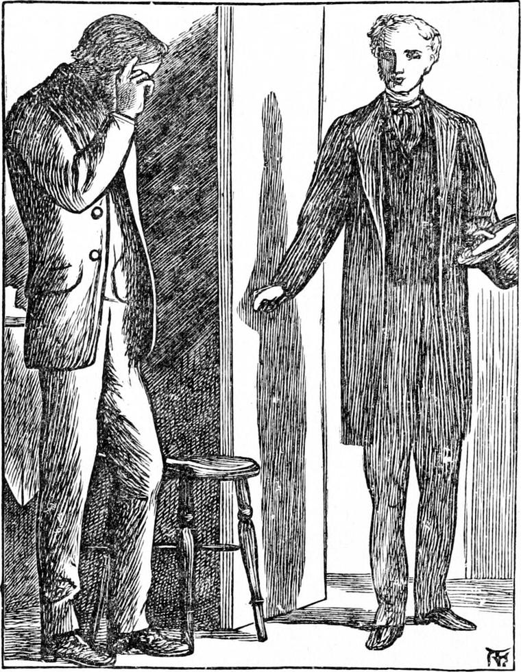

THE next morning, Diamond's mother said to his father, “I'm not quite comfortable about that child again.”
“Which child, Martha?” asked Joseph. “You've got a choice now.”
“Well, Diamond I mean. I'm afraid he's getting into his queer ways again. He's been at his old trick of walking in his sleep. I saw him run up the stair in the middle of the night.”
“Didn't you go after him, wife?”
“Of course I did—and found him fast asleep in his bed. It's because he's had so little meat for the last six weeks, I'm afraid.”
“It may be that. I'm very sorry. But if it don't please God to send us enough, what am I to do, wife?”
“You can't help it, I know, my dear good man,” returned Martha. “And after all I don't know. I don't see why he shouldn't get on as well as the rest of us. There I'm nursing baby all this time, and I get along pretty well. I'm sure, to hear the little man singing, you wouldn't think there was much amiss with him.”
For at that moment Diamond was singing like a lark in the clouds. He had the new baby in his arms, while his mother was dressing herself. Joseph was sitting at his breakfast—a little weak tea, dry bread, and very dubious butter—which Nanny had set for him, and which he was enjoying because he was hungry. He had groomed both horses, and had got old Diamond harnessed ready to put to.
“Think of a fat angel, Dulcimer!” said Diamond.
The baby had not been christened yet, but Diamond, in reading his Bible, had come upon the word dulcimer, and thought it so pretty that ever after he called his sister Dulcimer!
“Think of a red, fat angel, Dulcimer!” he repeated; “for Ruby's an angel of a horse, Dulcimer. He sprained his ankle and got fat on purpose.”
“What purpose, Diamond?” asked his father.
“Ah! that I can't tell. I suppose to look handsome when his master comes,” answered Diamond.—“What do you think, Dulcimer? It must be for some good, for Ruby's an angel.”
“I wish I were rid of him, anyhow,” said his father; “for he weighs heavy on my mind.”
“No wonder, father: he's so fat,” said Diamond. “But you needn't be afraid, for everybody says he's in better condition than when you had him.”
“Yes, but he may be as thin as a tin horse before his owner comes. It was too bad to leave him on my hands this way.”
“Perhaps he couldn't help it,” suggested Diamond. “I daresay he has some good reason for it.”
“So I should have said,” returned his father, “if he had not driven such a hard bargain with me at first.”
“But we don't know what may come of it yet, husband,” said his wife. “Mr. Raymond may give a little to boot, seeing you've had more of the bargain than you wanted or reckoned upon.”
“I'm afraid not: he's a hard man,” said Joseph, as he rose and went to get his cab out.
Diamond resumed his singing. For some time he carolled snatches of everything or anything; but at last it settled down into something like what follows. I cannot tell where or how he got it.
Out of the everywhere into here.
Out of the sky as I came through.
Some of the starry spikes left in.
I found it waiting when I got here.
A soft hand stroked it as I went by.
I saw something better than any one knows.
Three angels gave me at once a kiss.
God spoke, and it came out to hear.
Love made itself into hooks and bands.
From the same box as the cherubs' wings.
God thought about me, and so I grew.
God thought about you, and so I am here.
“You never made that song, Diamond,” said his mother.
“No, mother. I wish I had. No, I don't. That would be to take it from somebody else. But it's mine for all that.”
“What makes it yours?”
“I love it so.”
“Does loving a thing make it yours?”
“I think so, mother—at least more than anything else can. If I didn't love baby (which couldn't be, you know) she wouldn't be mine a bit. But I do love baby, and baby is my very own Dulcimer.”
“The baby's mine, Diamond.”
“That makes her the more mine, mother.”
“How do you make that out?”
“Because you're mine, mother.”
“Is that because you love me?”
“Yes, just because. Love makes the only myness,” said Diamond.
When his father came home to have his dinner, and change Diamond for Ruby, they saw him look very sad, and he told them he had not had a fare worth mentioning the whole morning.
“We shall all have to go to the workhouse, wife,” he said.
“It would be better to go to the back of the north wind,” said Diamond, dreamily, not intending to say it aloud.
“So it would,” answered his father. “But how are we to get there, Diamond?”
“We must wait till we're taken,” returned Diamond.

Before his father could speak again, a knock came to the door, and in walked Mr. Raymond with a smile on his face. Joseph got up and received him respectfully, but not very cordially. Martha set a chair for him, but he would not sit down.
“You are not very glad to see me,” he said to Joseph. “You don't want to part with the old horse.”
“Indeed, sir, you are mistaken there. What with anxiety about him, and bad luck, I've wished I were rid of him a thousand times. It was only to be for three months, and here it's eight or nine.”
“I'm sorry to hear such a statement,” said Mr. Raymond. “Hasn't he been of service to you?”
“Not much, not with his lameness”
“Ah!” said Mr. Raymond, hastily—“you've been laming him—have you? That accounts for it. I see, I see.”
“It wasn't my fault, and he's all right now. I don't know how it happened, but—”
“He did it on purpose,” said Diamond. “He put his foot on a stone just to twist his ankle.”
“How do you know that, Diamond?” said his father, turning to him. “I never said so, for I could not think how it came.”
“I heard it—in the stable,” answered Diamond.
“Let's have a look at him,” said Mr. Raymond.
“If you'll step into the yard,” said Joseph, “I'll bring him out.”
They went, and Joseph, having first taken off his harness, walked Ruby into the middle of the yard.
“Why,” said Mr. Raymond, “you've not been using him well.”
“I don't know what you mean by that, sir. I didn't expect to hear that from you. He's sound in wind and limb—as sound as a barrel.”
“And as big, you might add. Why, he's as fat as a pig! You don't call that good usage!”
Joseph was too angry to make any answer.
“You've not worked him enough, I say. That's not making good use of him. That's not doing as you'd be done by.”
“I shouldn't be sorry if I was served the same, sir.”
“He's too fat, I say.”
“There was a whole month I couldn't work him at all, and he did nothing but eat his head off. He's an awful eater. I've taken the best part of six hours a day out of him since, but I'm always afraid of his coming to grief again, and so I couldn't make the most even of that. I declare to you, sir, when he's between the shafts, I sit on the box as miserable as if I'd stolen him. He looks all the time as if he was a bottling up of complaints to make of me the minute he set eyes on you again. There! look at him now, squinting round at me with one eye! I declare to you, on my word, I haven't laid the whip on him more than three times.”
“I'm glad to hear it. He never did want the whip.”
“I didn't say that, sir. If ever a horse wanted the whip, he do. He's brought me to beggary almost with his snail's pace. I'm very glad you've come to rid me of him.”
“I don't know that,” said Mr. Raymond. “Suppose I were to ask you to buy him of me—cheap.”
“I wouldn't have him in a present, sir. I don't like him. And I wouldn't drive a horse that I didn't like—no, not for gold. It can't come to good where there's no love between 'em.”
“Just bring out your own horse, and let me see what sort of a pair they'd make.”
Joseph laughed rather bitterly as he went to fetch Diamond.
When the two were placed side by side, Mr. Raymond could hardly keep his countenance, but from a mingling of feelings. Beside the great, red, round barrel, Ruby, all body and no legs, Diamond looked like a clothes-horse with a skin thrown over it. There was hardly a spot of him where you could not descry some sign of a bone underneath. Gaunt and grim and weary he stood, kissing his master, and heeding no one else.
“You haven't been using him well,” said Mr. Raymond.
“I must say,” returned Joseph, throwing an arm round his horse's neck, “that the remark had better have been spared, sir. The horse is worth three of the other now.”
“I don't think so. I think they make a very nice pair. If the one's too fat, the other's too lean—so that's all right. And if you won't buy my Ruby, I must buy your Diamond.”
“Thank you, sir,” said Joseph, in a tone implying anything but thanks.
“You don't seem to like the proposal,” said Mr. Raymond.
“I don't,” returned Joseph. “I wouldn't part with my old Diamond for his skin as full of nuggets as it is of bones.”
“Who said anything about parting with him?”
“You did now, sir.”
“No; I didn't. I only spoke of buying him to make a pair with Ruby. We could pare Ruby and patch Diamond a bit. And for height, they are as near a match as I care about. Of course you would be the coachman—if only you would consent to be reconciled to Ruby.”
Joseph stood bewildered, unable to answer.
“I've bought a small place in Kent,” continued Mr. Raymond, “and I must have a pair to my carriage, for the roads are hilly thereabouts. I don't want to make a show with a pair of high-steppers. I think these will just do. Suppose, for a week or two, you set yourself to take Ruby down and bring Diamond up. If we could only lay a pipe from Ruby's sides into Diamond's, it would be the work of a moment. But I fear that wouldn't answer.”
A strong inclination to laugh intruded upon Joseph's inclination to cry, and made speech still harder than before.
“I beg your pardon, sir,” he said at length. “I've been so miserable, and for so long, that I never thought you was only a chaffing of me when you said I hadn't used the horses well. I did grumble at you, sir, many's the time in my trouble; but whenever I said anything, my little Diamond would look at me with a smile, as much as to say: 'I know him better than you, father;' and upon my word, I always thought the boy must be right.”
“Will you sell me old Diamond, then?”
“I will, sir, on one condition—that if ever you want to part with him or me, you give me the option of buying him. I could not part with him, sir. As to who calls him his, that's nothing; for, as Diamond says, it's only loving a thing that can make it yours—and I do love old Diamond, sir, dearly.”
“Well, there's a cheque for twenty pounds, which I wrote to offer you for him, in case I should find you had done the handsome thing by Ruby. Will that be enough?”
“It's too much, sir. His body ain't worth it—shoes and all. It's only his heart, sir—that's worth millions—but his heart'll be mine all the same—so it's too much, sir.”
“I don't think so. It won't be, at least, by the time we've got him fed up again. You take it and welcome. Just go on with your cabbing for another month, only take it out of Ruby and let Diamond rest; and by that time I shall be ready for you to go down into the country.”
“Thank you, sir, thank you. Diamond set you down for a friend, sir, the moment he saw you. I do believe that child of mine knows more than other people.”
“I think so, too,” said Mr. Raymond as he walked away.
He had meant to test Joseph when he made the bargain about Ruby, but had no intention of so greatly prolonging the trial. He had been taken ill in Switzerland, and had been quite unable to return sooner. He went away now highly gratified at finding that he had stood the test, and was a true man.
Joseph rushed in to his wife who had been standing at the window anxiously waiting the result of the long colloquy. When she heard that the horses were to go together in double harness, she burst forth into an immoderate fit of laughter. Diamond came up with the baby in his arms and made big anxious eyes at her, saying—
“What is the matter with you, mother dear? Do cry a little. It will do you good. When father takes ever so small a drop of spirits, he puts water to it.”
“You silly darling!” said his mother; “how could I but laugh at the notion of that great fat Ruby going side by side with our poor old Diamond?”
“But why not, mother? With a month's oats, and nothing to do, Diamond'll be nearer Ruby's size than you will father's. I think it's very good for different sorts to go together. Now Ruby will have a chance of teaching Diamond better manners.”
“How dare you say such a thing, Diamond?” said his father, angrily. “To compare the two for manners, there's no comparison possible. Our Diamond's a gentleman.”
“I don't mean to say he isn't, father; for I daresay some gentlemen judge their neighbours unjustly. That's all I mean. Diamond shouldn't have thought such bad things of Ruby. He didn't try to make the best of him.”
“How do you know that, pray?”
“I heard them talking about it one night.”
“Who?”
“Why Diamond and Ruby. Ruby's an angel.”
Joseph stared and said no more. For all his new gladness, he was very gloomy as he re-harnessed the angel, for he thought his darling Diamond was going out of his mind.
He could not help thinking rather differently, however, when he found the change that had come over Ruby. Considering his fat, he exerted himself amazingly, and got over the ground with incredible speed. So willing, even anxious, was he to go now, that Joseph had to hold him quite tight.
Then as he laughed at his own fancies, a new fear came upon him lest the horse should break his wind, and Mr. Raymond have good cause to think he had not been using him well. He might even suppose that he had taken advantage of his new instructions, to let out upon the horse some of his pent-up dislike; whereas in truth, it had so utterly vanished that he felt as if Ruby, too, had been his friend all the time.